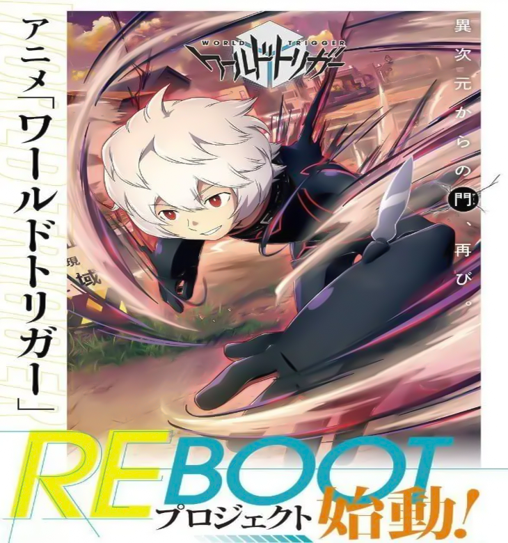
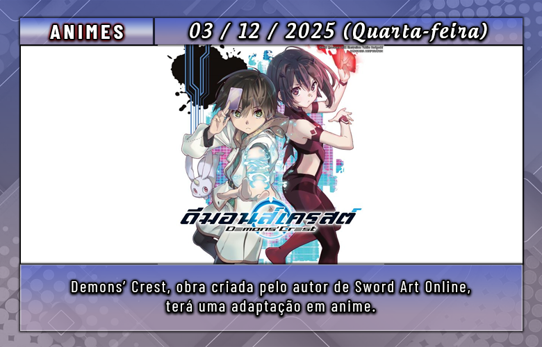
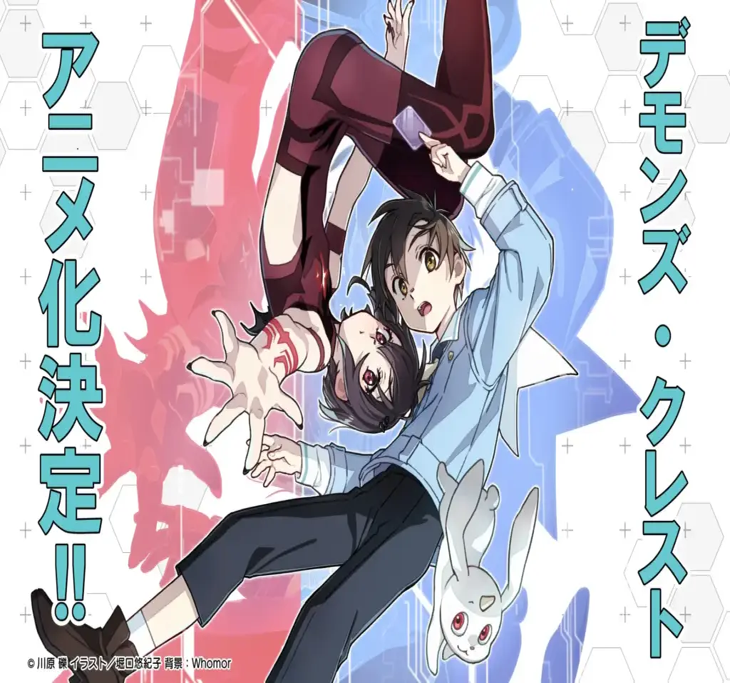
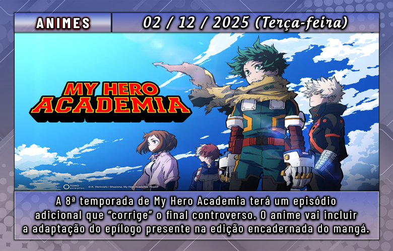
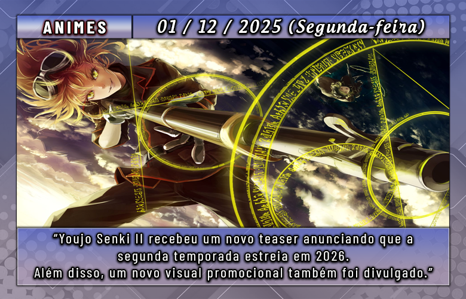

A conta oficial do anime World Trigger no X (antigo Twitter) marcou para esta quinta-feira, 4 de dezembro, a revelação de um anúncio misterioso relacionado a um possível reboot.
Para antecipar a novidade, o projeto World Trigger: Projeto Reboot recebeu uma nova arte promocional divulgada nas redes.
Confira a arte promocional:

Ainda não foram revelados detalhes adicionais sobre o projeto. Vale lembrar que a série também terá um painel na próxima Jump Festa, marcada para os dias 20 e 21 de dezembro.
O anime, baseado no mangá de Daisuke Ashihara e produzido pela Toei Animation, exibiu sua primeira temporada com 73 episódios entre 2014 e 2016.
A produção voltou em 2021 com mais duas temporadas, cada uma com 12 episódios, e desde então permanece em hiato.
Sobre a história:
Um portal para outra dimensão se abriu e começou a liberar criaturas gigantes e praticamente indestrutíveis, colocando a humanidade em risco. Para enfrentá-las, surge uma força especial de combatentes que utiliza a mesma tecnologia alienígena para contra-atacar.

A Kadokawa revelou que Demons' Crest, série de light novels escrita por Reki Kawahara, o mesmo autor de Sword Art Online será transformada em anime.
Para comemorar a novidade, a ilustradora da obra, Yukiko Horiguchi — conhecida por seu trabalho como designer de personagens em K-ON! pela Kyoto Animation preparou uma arte especial celebrando o anúncio.
Veja a arte:

Sobre o que é Demons’ Crest?
No último VRMMORPG lançado, chamado Actual Magic, uma turma inteira do sexto ano acaba presa dentro de um aterrorizante jogo de sobrevivência. O garoto de 11 anos Yuuma e seus colegas precisam enfrentar inúmeros perigos: criaturas ameaçadoras rondam cada canto, e um dos amigos do grupo acaba transformado em um monstro.
A única chance de escapar está em Valac, um demônio que tomou posse do corpo da irmã gêmea de Yuuma. Sob a orientação dessa entidade, Yuuma e seus companheiros iniciam uma jornada para resgatar o amigo desaparecido, Nagi. Porém, um encontro inesperado cruza o caminho deles.

Quando o mangá de My Hero Academia chegou ao fim em seu capítulo 430, muitos leitores ficaram insatisfeitos com algumas decisões tomadas no desfecho. Apesar de revelar o que aconteceria com Deku, a obra deixou de explorar seu relacionamento com Ochaco e não concluiu adequadamente o arco de certos personagens importantes.
Com isso, o episódio extra do anime deve se basear no capítulo 431, presente nos volumes encadernados da série:
Nesse capítulo, o autor Kohei Horikoshi aprofunda a relação entre Deku e Ochaco e dedica mais espaço ao elenco secundário;
Ainda assim, ele mantém o mesmo destino de Shigaraki, algo que continua desagradando parte da comunidade;
A adaptação animada deve encerrar discussões sobre a canonicidade do capítulo 431;
O novo conteúdo também pode incluir material inédito, o que faria da versão animada a interpretação mais “completa” da história. Porém, como há muito sigilo sobre o roteiro, ainda é difícil prever a qualidade do que será apresentado aos fãs.
Quando o novo final de My Hero Academia será exibido?
Seguindo o cronograma atual, o episódio 12 da 8ª temporada deve ir ao ar em 20 de dezembro deste ano. No Brasil, a Crunchyroll deve transmiti-lo simultaneamente com o Japão, já que possui os direitos exclusivos dos episódios recentes.
Agora resta aguardar para ver se, em sua versão animada, o desfecho de Deku causará o mesmo impacto que ocorreu no mangá. Caso a recepção seja novamente controversa, é possível que a Toho Animation considere criar novos conteúdos no futuro para tentar amenizar a frustração que parte dos fãs ainda sente mais de um ano após o término da obra original.

A Kadokawa divulgou um novo teaser visual e um vídeo promocional de Saga of Tanya the Evil II, a segunda temporada do anime baseado nas light novels de Carlo Zen, ilustradas por Shinobu Shinotsuki. O teaser confirma que o retorno da série à TV está programado para 2026.
Elenco:
Aoi Yuuki como Tanya Degurechaff
Saori Hayami como Viktoriya “Visha” Ivanovna Serebryakov
Shinichirou Miki como Erich von Rerugen
Tesshou Genda como Kurt von Rudersdorf
Houchuu Ootsuka como Hans von Zettour
Sinopse:
Em meio a um campo de batalha coberto de lama e sangue, uma jovem garota enfrenta confrontos aéreos brutais contra magos militares, usando armas, magia e pura estratégia. Essa é Tanya Degurechaff, temida como o “Demônio do Reno”, uma das combatentes mais perigosas do Império em um mundo dilacerado pela guerra. Contudo, por trás de sua expressão impassível está a mente de um ex-salário japonês — um homem frio e calculista que renasceu como uma órfã após desafiar uma entidade misteriosa. Com suas memórias intactas, Tanya fará o que for necessário para sobreviver e conquistar segurança, mesmo que isso a leve ainda mais fundo no caos do front.
Informações adicionais:
A nova temporada continua nas mãos do estúdio NUT, mantendo o estilo visual da obra. A direção agora é de Takayuki Yamamoto, conhecido por seu trabalho como diretor de episódios em My Hero Academia, assumindo o lugar de Yutaka Uemura. Kenta Ihara permanece responsável pela supervisão e escrita dos roteiros, e Yuji Hosogoe retorna no design de personagens e direção-chefe de animação.
Saga of Tanya the Evil (Youjo Senki) tem origem na série de light novels escrita por Carlo Zen e ilustrada por Shinobu Shinotsuki, lançada pela Kadokawa desde 2013 e contando com 14 volumes até setembro de 2023. A obra também ganhou uma versão em mangá, ilustrada por Chika Toujou, publicada na revista Monthly Comp Ace desde 2016 e já ultrapassando os 30 volumes encadernados.
O anime para TV estreou originalmente em janeiro de 2017, produzido pelo estúdio NUT, seguido por um filme lançado em 2019 que deu continuidade direta à história. A franquia ainda rendeu um jogo mobile — Youjo Senki: Madoushi Kaku Tatakaeri — lançado em 2020 e encerrado em 2022, além de participações em crossovers como Isekai Quartet.
O estúdio Brain’s Base (To Your Eternity, In/Spectre) retorna para comandar a animação da nova temporada.
O site oficial do anime Golden Kamuy divulgou um novo trailer da temporada final, confirmando a data de estreia e mostrando uma prévia da música de abertura.
A 5ª e última temporada, adaptada do mangá de Satoru Noda (DOGSRED), chega à TV japonesa em 5 de janeiro de 2026.
O tema de abertura do Arco Final será “Kogane no Kanata” (Beyond the Gold), interpretado por Awich em parceria com ALI, que também assinaram a música-tema dos filmes Golden Kamuy: Arco da Fábrica de Cerveja de Sapporo. Veja o trailer a seguir:
O estúdio Brain’s Base (To Your Eternity, In/Spectre) retorna para comandar a animação da nova temporada.
O site oficial do anime Fire Force liberou o trailer principal da Parte 2 da temporada final, destacando uma nova adição ao elenco e oferecendo prévias dos próximos temas de abertura e encerramento. Hōchū Ōtsuka (conhecido por dar voz ao Jiraiya em Naruto) entra para o elenco como Hibachi Shinmon, o antigo líder da brigada de Asakusa. O novo tema de abertura será “Ignis”, interpretado por Takanori Nishikawa, enquanto o encerramento ficará por conta de “Speak of the Devil”, da banda Survive Said the Prophet.
Confira o trailer da parte 2 da temporada final abaixo:
A 3ª e última temporada, produzida pelo estúdio david production (JoJo’s Bizarre Adventure, Undead Unluck), retorna em 9 de janeiro de 2026.
Os 12 episódios da primeira parte já estão disponíveis na Crunchyroll com legendas e dublagem em português, assim como as temporadas anteriores.